import numpy as np
import pandas as pd
import html
from pathlib import PathHacker News Dataset EDA
Tags: python, machine-learning
date: 2022-06-21T21:00:00+10:00
feature_image: /images/hackernews_eda.png
A mystery! A riddle! A puzzle! A quest! This was the moment that Ada loved best.
Ada Twist, Scientist, Andrea Beaty
This is an exploration of 2021 Hacker News posts as a precursor to building a books dataset.
The data was sourced from the Google Bigquery public dataset bigquery-public-data.hacker_news.full using a Kaggle notebook.
SELECT *
FROM `bigquery-public-data.hacker_news.full`
where '2021-01-01' <= timestamp and timestamp < '2022-01-01'I want to get a basic understanding of what’s in the dataset before doing any data mining.
The Hacker News FAQ is useful for contextualising some of the fields.
This post was generated with a Jupyter notebook.
Please note that these comments may contain some explicit content.
Load in data
pd.options.display.max_columns = 100Download the data into this path first.
Make sure we use nullable dtypes to avoid converting integer identifier to floats, and set the unique id as the key.
hn_path = Path('../data/hackernews2021.parquet')
df = pd.read_parquet(hn_path, use_nullable_dtypes=True).set_index('id')assert df.index.is_uniqueassert df.index.notna().all()Summary
Here’s the schema described in Big Query
| name | type | description |
|---|---|---|
| title | STRING | Story title |
| url | STRING | Story url |
| text | STRING | Story or comment text |
| dead | BOOLEAN | Is dead? |
| by | STRING | The username of the item’s author. |
| score | INTEGER | Story score |
| time | INTEGER | Unix time |
| timestamp | TIMESTAMP | Timestamp for the unix time |
| type | STRING | Type of details (comment, comment_ranking, poll, story, job, pollopt) |
| id | INTEGER | The item’s unique id. |
| parent | INTEGER | Parent comment ID |
| descendants | INTEGER | Number of story or poll descendants |
| ranking | INTEGER | Comment ranking |
| deleted | BOOLEAN | Is deleted? |
df.dtypestitle string
url string
text string
dead boolean
by string
score Int64
time Int64
timestamp datetime64[ns, UTC]
type string
parent Int64
descendants Int64
ranking Int64
deleted boolean
dtype: objectHere’s a sample of the dataframe.
Note that we can view any individual item by appending the id in the URL https://news.ycombinator.com/item?id=
df| title | url | text | dead | by | score | time | timestamp | type | parent | descendants | ranking | deleted | |
|---|---|---|---|---|---|---|---|---|---|---|---|---|---|
| id | |||||||||||||
| 27405131 | <NA> | <NA> | They didn't say they <i>weren't</i> ... | <NA> | chrisseaton | <NA> | 1622901869 | 2021-06-05 14:04:29+00:00 | comment | 27405089 | <NA> | <NA> | <NA> |
| 27814313 | <NA> | <NA> | Check out <a href="https://www.remno... | <NA> | noyesno | <NA> | 1626119705 | 2021-07-12 19:55:05+00:00 | comment | 27812726 | <NA> | <NA> | <NA> |
| 28626089 | <NA> | <NA> | Like a million-dollars pixel but with letters.... | <NA> | alainchabat | <NA> | 1632381114 | 2021-09-23 07:11:54+00:00 | comment | 28626017 | <NA> | <NA> | <NA> |
| 27143346 | <NA> | <NA> | Not the question... | <NA> | SigmundA | <NA> | 1620920426 | 2021-05-13 15:40:26+00:00 | comment | 27143231 | <NA> | <NA> | <NA> |
| 29053108 | <NA> | <NA> | There’s the Unorganized Militia of the United ... | <NA> | User23 | <NA> | 1635636573 | 2021-10-30 23:29:33+00:00 | comment | 29052087 | <NA> | <NA> | <NA> |
| ... | ... | ... | ... | ... | ... | ... | ... | ... | ... | ... | ... | ... | ... |
| 27367848 | <NA> | <NA> | Housing supply isn’t something that can’t chan... | <NA> | JCM9 | <NA> | 1622636746 | 2021-06-02 12:25:46+00:00 | comment | 27367172 | <NA> | <NA> | <NA> |
| 28052800 | <NA> | <NA> | Final Fantasy XIV has been experiencing consta... | <NA> | amyjess | <NA> | 1628017217 | 2021-08-03 19:00:17+00:00 | comment | 28050798 | <NA> | <NA> | <NA> |
| 28052805 | <NA> | <NA> | How did you resolve it? | <NA> | 8ytecoder | <NA> | 1628017238 | 2021-08-03 19:00:38+00:00 | comment | 28049375 | <NA> | <NA> | <NA> |
| 26704924 | <NA> | <NA> | This hasn't been my experience being vega... | <NA> | pacomerh | <NA> | 1617657938 | 2021-04-05 21:25:38+00:00 | comment | 26704794 | <NA> | <NA> | <NA> |
| 27076885 | <NA> | <NA> | Death services tread a very fine moral line. ... | <NA> | curryst | <NA> | 1620400897 | 2021-05-07 15:21:37+00:00 | comment | 27075961 | <NA> | <NA> | <NA> |
4155063 rows × 13 columns
Every post has a time, timestamp and parent.
No post has a ranking.
df.notna().mean().apply('{:0.2%}'.format)title 8.97%
url 8.46%
text 88.57%
dead 3.87%
by 97.22%
score 9.04%
time 100.00%
timestamp 100.00%
type 100.00%
parent 90.64%
descendants 7.00%
ranking 0.00%
deleted 2.78%
dtype: objectWe filtered to data in 2021, so it’s all in this range
df['timestamp'].min(), df['timestamp'].max()(Timestamp('2021-01-01 00:00:01+0000', tz='UTC'),
Timestamp('2021-12-31 23:59:50+0000', tz='UTC'))Most threads consist of a story which have comments. Apparently there are also job and poll objects.
df['type'].value_counts()comment 3766009
story 387194
job 1422
pollopt 385
poll 53
Name: type, dtype: Int64Date and Time
There’s a spike in January (holidays?) a drop in February (lower days), but a fairly consistent amount of traffic.
df['timestamp'].dt.month.value_counts().sort_index().plot()<AxesSubplot:>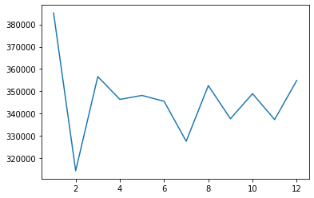
Looking at the daily traffic it look like there may be weekly effects, but aside from a spike towards the end of January it’s fairly consistent.
df['timestamp'].dt.date.value_counts().sort_index().plot()<AxesSubplot:>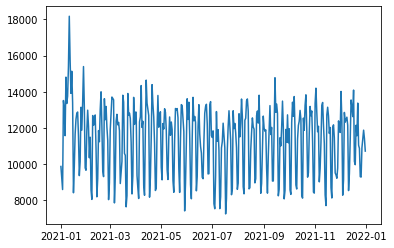
Most posts are made on the weekdays
df['timestamp'].dt.day_name().value_counts()Tuesday 662106
Wednesday 658830
Thursday 654405
Monday 628152
Friday 625707
Sunday 467553
Saturday 458310
Name: timestamp, dtype: int64Based on the 4am rule is looks like the most common timezone is around UTC-1.
This is slightly surprising, I would expect it could be closer to a US timezone (around -4 to -8). Maybe there’s more posting from other regions than I’d have thought.
df['timestamp'].dt.hour.value_counts().sort_index().plot()<AxesSubplot:>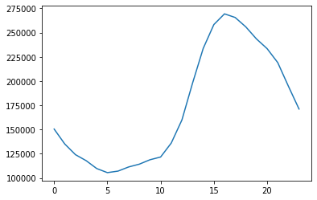
Story
A story consists of a title, and it looks like either a url or text
story = df.query('type=="story"')
story| title | url | text | dead | by | score | time | timestamp | type | parent | descendants | ranking | deleted | |
|---|---|---|---|---|---|---|---|---|---|---|---|---|---|
| id | |||||||||||||
| 28540306 | CoinCircle for Life | <NA> | Hello, Lets join us to CoinCircle for our bett... | True | rend-airdrop | 1 | 1631719412 | 2021-09-15 15:23:32+00:00 | story | <NA> | <NA> | <NA> | <NA> |
| 26273978 | Find the number of third-party privacy tracker... | <NA> | Exodus Privacy is a non-profit organization th... | True | moulidorai | 1 | 1614341393 | 2021-02-26 12:09:53+00:00 | story | <NA> | <NA> | <NA> | <NA> |
| 27214431 | Ask HN: Desk Recommendations? | <NA> | I often see standing desk recommendations here... | True | throwaw9l938ni | 1 | 1621458219 | 2021-05-19 21:03:39+00:00 | story | <NA> | <NA> | <NA> | <NA> |
| 25705820 | Demand Hunter Biden Be Arrested | <NA> | There are so many pictures of Hunter Biden, Jo... | True | bidenpedo | 1 | 1610232470 | 2021-01-09 22:47:50+00:00 | story | <NA> | <NA> | <NA> | <NA> |
| 26110009 | Deep learning multivariate nonlinear regression | <NA> | Does deep learning really work for regression ... | True | dl_regression | 1 | 1613095333 | 2021-02-12 02:02:13+00:00 | story | <NA> | <NA> | <NA> | <NA> |
| ... | ... | ... | ... | ... | ... | ... | ... | ... | ... | ... | ... | ... | ... |
| 28773509 | Apple to face EU antitrust charge over NFC chip | https://www.reuters.com/technology/exclusive-e... | <NA> | <NA> | nojito | 170 | 1633530062 | 2021-10-06 14:21:02+00:00 | story | <NA> | 219 | <NA> | <NA> |
| 26400239 | The Roblox Microverse | https://stratechery.com/2021/the-roblox-microv... | <NA> | <NA> | Kinrany | 173 | 1615306495 | 2021-03-09 16:14:55+00:00 | story | <NA> | 203 | <NA> | <NA> |
| 27559832 | Safari 15 on Mac OS, a user interface mess | https://morrick.me/archives/9368 | <NA> | <NA> | freediver | 463 | 1624104913 | 2021-06-19 12:15:13+00:00 | story | <NA> | 353 | <NA> | <NA> |
| 26992205 | Stock Market Returns Are Anything but Average | https://awealthofcommonsense.com/2021/04/stock... | <NA> | <NA> | RickJWagner | 222 | 1619783307 | 2021-04-30 11:48:27+00:00 | story | <NA> | 413 | <NA> | <NA> |
| 29738298 | Tokyo police lose 2 floppy disks containing in... | https://mainichi.jp/english/articles/20211227/... | <NA> | <NA> | ardel95 | 232 | 1640883038 | 2021-12-30 16:50:38+00:00 | story | <NA> | 218 | <NA> | <NA> |
387194 rows × 13 columns
Stories normally have title and a URL, and occasionally have text.
They’re almost always by someone, and have a score. They never have a parent (they’re always top level), but they normally have descendants.
Some are dead (removed by Hacker News) and some are deleted (removed by the author).
(
story
.notna()
.mean()
.apply('{:0.1%}'.format)
)title 95.9%
url 90.5%
text 4.9%
dead 22.5%
by 96.6%
score 96.6%
time 100.0%
timestamp 100.0%
type 100.0%
parent 0.0%
descendants 75.1%
ranking 0.0%
deleted 3.4%
dtype: objectBy seems to be missing only for deleted stories
(
story
.query('by.isna()')
)| title | url | text | dead | by | score | time | timestamp | type | parent | descendants | ranking | deleted | |
|---|---|---|---|---|---|---|---|---|---|---|---|---|---|
| id | |||||||||||||
| 26779931 | <NA> | <NA> | <NA> | <NA> | <NA> | <NA> | 1618238390 | 2021-04-12 14:39:50+00:00 | story | <NA> | <NA> | <NA> | True |
| 26122158 | <NA> | <NA> | <NA> | <NA> | <NA> | <NA> | 1613203434 | 2021-02-13 08:03:54+00:00 | story | <NA> | <NA> | <NA> | True |
| 25699401 | <NA> | <NA> | <NA> | <NA> | <NA> | <NA> | 1610190538 | 2021-01-09 11:08:58+00:00 | story | <NA> | <NA> | <NA> | True |
| 26206857 | <NA> | <NA> | <NA> | <NA> | <NA> | <NA> | 1613848074 | 2021-02-20 19:07:54+00:00 | story | <NA> | <NA> | <NA> | True |
| 26316571 | <NA> | <NA> | <NA> | <NA> | <NA> | <NA> | 1614700390 | 2021-03-02 15:53:10+00:00 | story | <NA> | <NA> | <NA> | True |
| ... | ... | ... | ... | ... | ... | ... | ... | ... | ... | ... | ... | ... | ... |
| 28201589 | <NA> | <NA> | <NA> | <NA> | <NA> | <NA> | 1629140598 | 2021-08-16 19:03:18+00:00 | story | <NA> | <NA> | <NA> | True |
| 26786548 | <NA> | <NA> | <NA> | <NA> | <NA> | <NA> | 1618271177 | 2021-04-12 23:46:17+00:00 | story | <NA> | <NA> | <NA> | True |
| 26689984 | <NA> | <NA> | <NA> | <NA> | <NA> | <NA> | 1617548611 | 2021-04-04 15:03:31+00:00 | story | <NA> | <NA> | <NA> | True |
| 27349809 | <NA> | <NA> | <NA> | <NA> | <NA> | <NA> | 1622509992 | 2021-06-01 01:13:12+00:00 | story | <NA> | <NA> | <NA> | True |
| 25913791 | <NA> | <NA> | <NA> | <NA> | <NA> | <NA> | 1611651379 | 2021-01-26 08:56:19+00:00 | story | <NA> | <NA> | <NA> | True |
13300 rows × 13 columns
Every story has a by unless it’s deleted or dead.
(
story
.query('by.isna() & deleted.isna() & dead.isna()')
)| title | url | text | dead | by | score | time | timestamp | type | parent | descendants | ranking | deleted | |
|---|---|---|---|---|---|---|---|---|---|---|---|---|---|
| id |
How do I make a link in a text submission?
You can’t. This is to prevent people from submitting a link with their comments in a privileged position at the top of the page. If you want to submit a link with comments, just submit it, then add a regular comment.
This seems to be true most of the time
(
story
.assign(
has_url = lambda _: ~_.url.isna(),
has_text = lambda _: ~_.text.isna(),
has_url_and_text = lambda _: _.has_url & _.has_text,
has_url_or_text = lambda _: _.has_url | _.has_text,
)
.filter(like='has_')
.mean()
)has_url 0.904606
has_text 0.048536
has_url_and_text 0.000031
has_url_or_text 0.953111
dtype: float64There seems to be a few exceptions for Show HN.
We actually don’t have metadata to identify Ask HN and Show HN.
story.query('~url.isna() & ~text.isna()')| title | url | text | dead | by | score | time | timestamp | type | parent | descendants | ranking | deleted | |
|---|---|---|---|---|---|---|---|---|---|---|---|---|---|
| id | |||||||||||||
| 28074827 | Show HN: Visualizing a Codebase | https://octo.github.com/projects/repo-visualiz... | I explored an alternative way to view codebase... | <NA> | wattenberger | 283 | 1628176192 | 2021-08-05 15:09:52+00:00 | story | <NA> | 96 | <NA> | <NA> |
| 29019925 | Show HN: Guestio – A better way to find and bo... | https://guestio.com/ | Guestio is an all-in-one tool designed to help... | <NA> | travischappelll | 4 | 1635374411 | 2021-10-27 22:40:11+00:00 | story | <NA> | 2 | <NA> | <NA> |
| 26346586 | Show HN: Practical Python Projects book release | https://practicalpython.yasoob.me | Hi everyone!<p>I just released the Practical P... | <NA> | yasoob | 88 | 1614884336 | 2021-03-04 18:58:56+00:00 | story | <NA> | 14 | <NA> | <NA> |
| 27787426 | Show HN: Homer – A tool to build interactive t... | https://usehomer.app | Hi HN, my name is Rahul Sarathy and I built Ho... | <NA> | Outofthebot | 62 | 1625858111 | 2021-07-09 19:15:11+00:00 | story | <NA> | 26 | <NA> | <NA> |
| 27684916 | Why do we work so damn much? | https://www.nytimes.com/2021/06/29/opinion/ezr... | The New York Times: Opinion | Why Do We Work S... | <NA> | anirudhgarg | 44 | 1625027907 | 2021-06-30 04:38:27+00:00 | story | <NA> | 62 | <NA> | <NA> |
| 27257586 | C is not a serious programming language | https://www.yodaiken.com/2021/05/16/c-is-not-a... | <https://www.yodaiken.com/20... | True | vyodaiken | 1 | 1621796527 | 2021-05-23 19:02:07+00:00 | story | <NA> | <NA> | <NA> | <NA> |
| 28934833 | Bioelektryczność – Polish Robotics (1968) [video] | https://www.youtube.com/watch?v=NjrYk546uBA | I'm curious what was the state of an art ... | <NA> | danielEM | 134 | 1634757119 | 2021-10-20 19:11:59+00:00 | story | <NA> | 28 | <NA> | <NA> |
| 26998308 | Show HN: Second-Chance Pool | https://news.ycombinator.com/pool | HN's second-chance pool is a way to give ... | <NA> | dang | 543 | 1619811719 | 2021-04-30 19:41:59+00:00 | story | <NA> | 91 | <NA> | <NA> |
| 29225588 | Show HN: Grapic – Real whiteboards online usin... | https://www.grapic.co/ | Hi HN,<p>During the pandemic, two friends and ... | <NA> | nikonp | 97 | 1636969643 | 2021-11-15 09:47:23+00:00 | story | <NA> | 24 | <NA> | <NA> |
| 29705761 | Diego Rivera’s Vaccine Mural in Detroit in the... | https://historyofvaccines.blog/2021/07/12/dieg... | https://historyofvaccines.blog/... | <NA> | barbe | 4 | 1640632550 | 2021-12-27 19:15:50+00:00 | story | <NA> | 1 | <NA> | <NA> |
| 26251143 | My experience as a Gazan girl getting into Sil... | https://daliaawad28.medium.com/my-experience-a... | Hiii everyone, this is my first time posting h... | <NA> | daliaawad | 1723 | 1614181663 | 2021-02-24 15:47:43+00:00 | story | <NA> | 460 | <NA> | <NA> |
| 29655974 | Show HN: Jig – a tool to define, compute and m... | https://www.jigdev.com | Hi HN,<p>8 months ago, I posted “Ask HN: I bui... | <NA> | d--b | 74 | 1640210325 | 2021-12-22 21:58:45+00:00 | story | <NA> | 24 | <NA> | <NA> |
The scores look like they follow a sort of power law.
(
story
.query('dead.isna() & deleted.isna()')
.score
.fillna(0.)
.plot
.hist(logy=True, bins=40)
)<AxesSubplot:ylabel='Frequency'>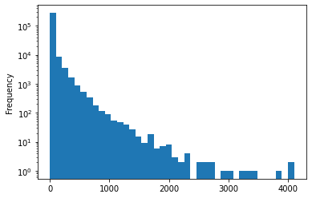
And descendants follow a similar path
(
story
.query('dead.isna() & deleted.isna()')
.descendants
.fillna(0.)
.plot
.hist(logy=True, bins=40)
)<AxesSubplot:ylabel='Frequency'>
It looks like the titles must be below around 80 characters and are typically around 60
story.title.fillna('').str.len().plot.hist(bins=20)<AxesSubplot:ylabel='Frequency'>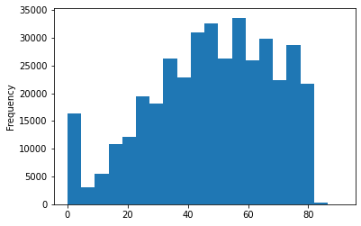
The text can be much longer and follows a decaying distribution
story.text.fillna('').str.len().plot.hist(bins=20, logy=True)<AxesSubplot:ylabel='Frequency'>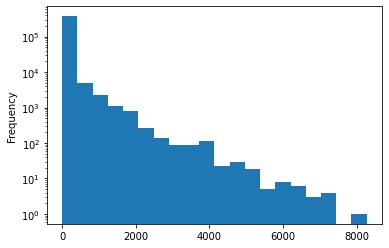
Some URLs can be very long (I guess they can have all sorts of query parameters)
story.url.fillna('').str.len().plot.hist(bins=20, logy=True)<AxesSubplot:ylabel='Frequency'>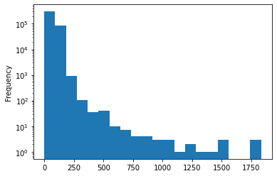
from urllib.parse import urlparseCommon hosts; Github, YouTube, twitter
story_url_host_counts = story['url'].dropna().map(lambda x: urlparse(x).hostname).value_counts()
story_url_host_counts.head(20)github.com 13622
www.youtube.com 12843
twitter.com 6968
en.wikipedia.org 6218
www.nytimes.com 5647
medium.com 4964
www.theguardian.com 4244
arstechnica.com 3545
www.bloomberg.com 3007
www.bbc.com 2996
www.theverge.com 2888
dev.to 2746
www.wsj.com 2704
www.reuters.com 2445
techcrunch.com 1820
www.cnbc.com 1792
www.reddit.com 1430
www.bbc.co.uk 1426
www.washingtonpost.com 1413
www.theatlantic.com 1374
Name: url, dtype: int64Again a small handful of hosts get most of the links
story_url_host_counts.plot.hist(logy=True, bins=20)<AxesSubplot:ylabel='Frequency'>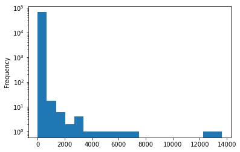
There are some power users that post a lot of stories
story_by_counts = story.by.value_counts()
story_by_counts.head(20)Tomte 4856
todsacerdoti 3031
tosh 2940
pseudolus 2876
rbanffy 2875
mooreds 1915
samizdis 1834
giuliomagnifico 1570
feross 1491
CapitalistCartr 1413
ingve 1399
fortran77 1358
gmays 1162
infodocket 1098
belter 1078
graderjs 1061
elsewhen 1053
kiyanwang 1009
1cvmask 1005
LinuxBender 996
Name: by, dtype: Int64And again a fast decline
story_by_counts.plot.hist(logy=True, bins=20)<AxesSubplot:ylabel='Frequency'>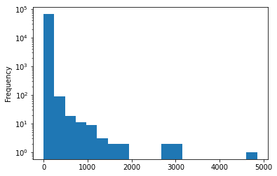
Parents
We can look at the type of the parent’s comments (they’ll sometimes be missing if the parent was posted before our cutoff date.
Most comments parent is another comment in a thread.
(
comments
.merge(df['type'], how='left', left_on='parent', right_index=True, suffixes=('', '_parent'), validate='m:1')
['type_parent']
.value_counts(dropna=False)
)comment 2997792
story 765342
<NA> 2412
poll 463
Name: type_parent, dtype: Int64We can efficiently look up a parent using a dictionary, returning <NA> when it’s not there.
from collections import defaultdict
parent_dict = df['parent'].dropna().to_dict()
parent_dict = defaultdict(lambda: pd.NA, parent_dict)%%time
df['parent'].map(parent_dict, na_action='ignore')CPU times: user 2.4 s, sys: 28.1 ms, total: 2.43 s
Wall time: 2.43 sid
27405131 27405024
27814313 27807850
28626089 28625485
27143346 27142955
29053108 29052012
...
27367848 <NA>
28052800 28049873
28052805 28046997
26704924 26704392
27076885 27074332
Name: parent, Length: 4155063, dtype: objectWe can do this iteratively to find all the parents.
When there is no parent we’ll return <NA>; this particular way of doing it gets faster the fewer non-null elements there are.
from tqdm.notebook import tqdm
MAX_DEPTH = 50
df['parent0'] = df['parent']
for idx in tqdm(range(MAX_DEPTH)):
last_col = f'parent{idx}'
col = f'parent{idx+1}'
df[col] = df[last_col].map(parent_dict, na_action='ignore')
if df[col].isna().all():
del df[col]
break
We can now see all the parents of any element
df.filter(regex='parent\d+')| parent0 | parent1 | parent2 | parent3 | parent4 | parent5 | parent6 | parent7 | parent8 | parent9 | parent10 | parent11 | parent12 | parent13 | parent14 | parent15 | parent16 | parent17 | parent18 | parent19 | parent20 | parent21 | parent22 | parent23 | parent24 | parent25 | parent26 | parent27 | parent28 | parent29 | parent30 | parent31 | parent32 | parent33 | parent34 | parent35 | parent36 | parent37 | parent38 | parent39 | parent40 | parent41 | parent42 | parent43 | |
|---|---|---|---|---|---|---|---|---|---|---|---|---|---|---|---|---|---|---|---|---|---|---|---|---|---|---|---|---|---|---|---|---|---|---|---|---|---|---|---|---|---|---|---|---|
| id | ||||||||||||||||||||||||||||||||||||||||||||
| 27405131 | 27405089 | 27405024 | 27404902 | 27404548 | 27404512 | <NA> | <NA> | <NA> | <NA> | <NA> | <NA> | <NA> | <NA> | <NA> | <NA> | <NA> | <NA> | <NA> | <NA> | <NA> | <NA> | <NA> | <NA> | <NA> | <NA> | <NA> | <NA> | <NA> | <NA> | <NA> | <NA> | <NA> | <NA> | <NA> | <NA> | <NA> | <NA> | <NA> | <NA> | <NA> | <NA> | <NA> | <NA> | <NA> |
| 27814313 | 27812726 | 27807850 | <NA> | <NA> | <NA> | <NA> | <NA> | <NA> | <NA> | <NA> | <NA> | <NA> | <NA> | <NA> | <NA> | <NA> | <NA> | <NA> | <NA> | <NA> | <NA> | <NA> | <NA> | <NA> | <NA> | <NA> | <NA> | <NA> | <NA> | <NA> | <NA> | <NA> | <NA> | <NA> | <NA> | <NA> | <NA> | <NA> | <NA> | <NA> | <NA> | <NA> | <NA> | <NA> |
| 28626089 | 28626017 | 28625485 | <NA> | <NA> | <NA> | <NA> | <NA> | <NA> | <NA> | <NA> | <NA> | <NA> | <NA> | <NA> | <NA> | <NA> | <NA> | <NA> | <NA> | <NA> | <NA> | <NA> | <NA> | <NA> | <NA> | <NA> | <NA> | <NA> | <NA> | <NA> | <NA> | <NA> | <NA> | <NA> | <NA> | <NA> | <NA> | <NA> | <NA> | <NA> | <NA> | <NA> | <NA> | <NA> |
| 27143346 | 27143231 | 27142955 | 27142884 | 27142567 | <NA> | <NA> | <NA> | <NA> | <NA> | <NA> | <NA> | <NA> | <NA> | <NA> | <NA> | <NA> | <NA> | <NA> | <NA> | <NA> | <NA> | <NA> | <NA> | <NA> | <NA> | <NA> | <NA> | <NA> | <NA> | <NA> | <NA> | <NA> | <NA> | <NA> | <NA> | <NA> | <NA> | <NA> | <NA> | <NA> | <NA> | <NA> | <NA> | <NA> |
| 29053108 | 29052087 | 29052012 | 29051947 | 29051758 | 29051607 | 29051478 | 29051448 | 29051365 | 29051109 | 29043296 | <NA> | <NA> | <NA> | <NA> | <NA> | <NA> | <NA> | <NA> | <NA> | <NA> | <NA> | <NA> | <NA> | <NA> | <NA> | <NA> | <NA> | <NA> | <NA> | <NA> | <NA> | <NA> | <NA> | <NA> | <NA> | <NA> | <NA> | <NA> | <NA> | <NA> | <NA> | <NA> | <NA> | <NA> |
| ... | ... | ... | ... | ... | ... | ... | ... | ... | ... | ... | ... | ... | ... | ... | ... | ... | ... | ... | ... | ... | ... | ... | ... | ... | ... | ... | ... | ... | ... | ... | ... | ... | ... | ... | ... | ... | ... | ... | ... | ... | ... | ... | ... | ... |
| 27367848 | 27367172 | <NA> | <NA> | <NA> | <NA> | <NA> | <NA> | <NA> | <NA> | <NA> | <NA> | <NA> | <NA> | <NA> | <NA> | <NA> | <NA> | <NA> | <NA> | <NA> | <NA> | <NA> | <NA> | <NA> | <NA> | <NA> | <NA> | <NA> | <NA> | <NA> | <NA> | <NA> | <NA> | <NA> | <NA> | <NA> | <NA> | <NA> | <NA> | <NA> | <NA> | <NA> | <NA> | <NA> |
| 28052800 | 28050798 | 28049873 | 28049688 | 28049620 | 28049359 | 28048919 | <NA> | <NA> | <NA> | <NA> | <NA> | <NA> | <NA> | <NA> | <NA> | <NA> | <NA> | <NA> | <NA> | <NA> | <NA> | <NA> | <NA> | <NA> | <NA> | <NA> | <NA> | <NA> | <NA> | <NA> | <NA> | <NA> | <NA> | <NA> | <NA> | <NA> | <NA> | <NA> | <NA> | <NA> | <NA> | <NA> | <NA> | <NA> |
| 28052805 | 28049375 | 28046997 | <NA> | <NA> | <NA> | <NA> | <NA> | <NA> | <NA> | <NA> | <NA> | <NA> | <NA> | <NA> | <NA> | <NA> | <NA> | <NA> | <NA> | <NA> | <NA> | <NA> | <NA> | <NA> | <NA> | <NA> | <NA> | <NA> | <NA> | <NA> | <NA> | <NA> | <NA> | <NA> | <NA> | <NA> | <NA> | <NA> | <NA> | <NA> | <NA> | <NA> | <NA> | <NA> |
| 26704924 | 26704794 | 26704392 | 26703874 | <NA> | <NA> | <NA> | <NA> | <NA> | <NA> | <NA> | <NA> | <NA> | <NA> | <NA> | <NA> | <NA> | <NA> | <NA> | <NA> | <NA> | <NA> | <NA> | <NA> | <NA> | <NA> | <NA> | <NA> | <NA> | <NA> | <NA> | <NA> | <NA> | <NA> | <NA> | <NA> | <NA> | <NA> | <NA> | <NA> | <NA> | <NA> | <NA> | <NA> | <NA> |
| 27076885 | 27075961 | 27074332 | <NA> | <NA> | <NA> | <NA> | <NA> | <NA> | <NA> | <NA> | <NA> | <NA> | <NA> | <NA> | <NA> | <NA> | <NA> | <NA> | <NA> | <NA> | <NA> | <NA> | <NA> | <NA> | <NA> | <NA> | <NA> | <NA> | <NA> | <NA> | <NA> | <NA> | <NA> | <NA> | <NA> | <NA> | <NA> | <NA> | <NA> | <NA> | <NA> | <NA> | <NA> | <NA> |
4155063 rows × 44 columns
One useful concept is the root, the parent that has no parents itself (generally because it’s top level, but sometimes because the parent isn’t in the dataframe).
%%time
root = None
for col in df.filter(regex='parent\d+').iloc[:,::-1]:
if root is None:
root = df[col]
else:
root = root.combine_first(df[col])
df['root'] = rootCPU times: user 11.1 s, sys: 826 ms, total: 11.9 s
Wall time: 11.9 sWe can also get the depth; how parents does it have?
df['depth'] = df.filter(regex='parent\d+').notna().sum(axis=1)What’s the distribution of depth for comments?
comments = df.query('type=="comment"')That’s some kind of zero-inflated distribution.
comments['depth'].value_counts().plot(logy=True)<AxesSubplot:>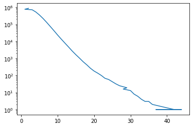
We can check the type of the root (we get <NA> when it’s not in the tree).
The vast majority of the the root of a comment is a story.
df.merge(comments['root'], left_index=True, right_on='root', how='right')['type'].value_counts(dropna=False)story 3759475
<NA> 5181
poll 1353
Name: type, dtype: Int64Let’s compare the descendants column with the
stories = df.query('type=="story"')df['root'].value_counts()25706993 4029
28693060 3088
25661474 2638
26347654 2372
26487854 2155
...
27038587 1
26640257 1
28404872 1
27531105 1
28347619 1
Name: root, Length: 121760, dtype: int64They’re highly correlated with some outliers near zero.
Some reasons I can think they would differ:
- Time Filter - we may miss some comments made after the time cutoff (would make descendants > children)
- Time of capture - there may be some uncounted descendants if they were captured before children (would make descendants < children)
- Exclusions - descendants may not be counted if they are dead or deleted (would make descendants < children)
children_counts = comments.loc[comments['dead'].isna() & comments['deleted'].isna(), 'root'].value_counts().rename('children')
children_counts = pd.concat([stories['descendants'], comments.loc[comments['dead'].isna() & comments['deleted'].isna(), 'root'].value_counts().rename('children')], axis=1).fillna(0)
children_counts.plot.scatter('descendants', 'children')<AxesSubplot:xlabel='descendants', ylabel='children'>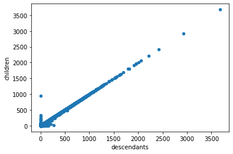
children_counts['diff'] = children_counts['descendants'] - children_counts['children']
children_counts.plot.scatter('descendants', 'diff')<AxesSubplot:xlabel='descendants', ylabel='diff'>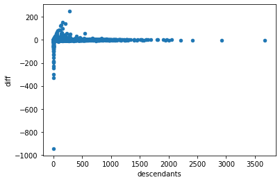
The cases where descendants >> children they were posted near our cutoff date, the end of 2021.
children_counts[children_counts['diff'] > 100]| descendants | children | diff | |
|---|---|---|---|
| 29752379 | 155 | 0.0 | 155.0 |
| 29749123 | 126 | 0.0 | 126.0 |
| 29753218 | 207 | 63.0 | 144.0 |
| 29753513 | 130 | 0.0 | 130.0 |
| 29753183 | 275 | 26.0 | 249.0 |
df.loc[children_counts[children_counts['diff'] > 100].index]| title | url | text | dead | by | score | time | timestamp | type | parent | descendants | ranking | deleted | parent0 | parent1 | parent2 | parent3 | parent4 | parent5 | parent6 | parent7 | parent8 | parent9 | parent10 | parent11 | parent12 | parent13 | parent14 | parent15 | parent16 | parent17 | parent18 | parent19 | parent20 | parent21 | parent22 | parent23 | parent24 | parent25 | parent26 | parent27 | parent28 | parent29 | parent30 | parent31 | parent32 | parent33 | parent34 | parent35 | parent36 | parent37 | parent38 | parent39 | parent40 | parent41 | parent42 | parent43 | root | depth | |
|---|---|---|---|---|---|---|---|---|---|---|---|---|---|---|---|---|---|---|---|---|---|---|---|---|---|---|---|---|---|---|---|---|---|---|---|---|---|---|---|---|---|---|---|---|---|---|---|---|---|---|---|---|---|---|---|---|---|---|---|
| 29752379 | A Guide to Twitter | https://tasshin.com/blog/a-guide-to-twitter/ | <NA> | <NA> | mwfogleman | 228 | 1640983643 | 2021-12-31 20:47:23+00:00 | story | <NA> | 155 | <NA> | <NA> | <NA> | <NA> | <NA> | <NA> | <NA> | <NA> | <NA> | <NA> | <NA> | <NA> | <NA> | <NA> | <NA> | <NA> | <NA> | <NA> | <NA> | <NA> | <NA> | <NA> | <NA> | <NA> | <NA> | <NA> | <NA> | <NA> | <NA> | <NA> | <NA> | <NA> | <NA> | <NA> | <NA> | <NA> | <NA> | <NA> | <NA> | <NA> | <NA> | <NA> | <NA> | <NA> | <NA> | <NA> | <NA> | 0 |
| 29749123 | Safest mushrooms to forage and eat | https://www.fieldandstream.com/story/survival/... | <NA> | <NA> | mizzao | 167 | 1640965909 | 2021-12-31 15:51:49+00:00 | story | <NA> | 126 | <NA> | <NA> | <NA> | <NA> | <NA> | <NA> | <NA> | <NA> | <NA> | <NA> | <NA> | <NA> | <NA> | <NA> | <NA> | <NA> | <NA> | <NA> | <NA> | <NA> | <NA> | <NA> | <NA> | <NA> | <NA> | <NA> | <NA> | <NA> | <NA> | <NA> | <NA> | <NA> | <NA> | <NA> | <NA> | <NA> | <NA> | <NA> | <NA> | <NA> | <NA> | <NA> | <NA> | <NA> | <NA> | <NA> | <NA> | 0 |
| 29753218 | Why Brahmins lead Western firms but rarely Ind... | https://www.economist.com/asia/2022/01/01/why-... | <NA> | <NA> | pseudolus | 141 | 1640990143 | 2021-12-31 22:35:43+00:00 | story | <NA> | 207 | <NA> | <NA> | <NA> | <NA> | <NA> | <NA> | <NA> | <NA> | <NA> | <NA> | <NA> | <NA> | <NA> | <NA> | <NA> | <NA> | <NA> | <NA> | <NA> | <NA> | <NA> | <NA> | <NA> | <NA> | <NA> | <NA> | <NA> | <NA> | <NA> | <NA> | <NA> | <NA> | <NA> | <NA> | <NA> | <NA> | <NA> | <NA> | <NA> | <NA> | <NA> | <NA> | <NA> | <NA> | <NA> | <NA> | <NA> | 0 |
| 29753513 | If – A Poem by Rudyard Kipling | https://poets.org/poem/if | <NA> | <NA> | BrindleBox | 282 | 1640992493 | 2021-12-31 23:14:53+00:00 | story | <NA> | 130 | <NA> | <NA> | <NA> | <NA> | <NA> | <NA> | <NA> | <NA> | <NA> | <NA> | <NA> | <NA> | <NA> | <NA> | <NA> | <NA> | <NA> | <NA> | <NA> | <NA> | <NA> | <NA> | <NA> | <NA> | <NA> | <NA> | <NA> | <NA> | <NA> | <NA> | <NA> | <NA> | <NA> | <NA> | <NA> | <NA> | <NA> | <NA> | <NA> | <NA> | <NA> | <NA> | <NA> | <NA> | <NA> | <NA> | <NA> | 0 |
| 29753183 | Belgian scientific base in Antarctica engulfed... | https://www.brusselstimes.com/belgium-all-news... | <NA> | <NA> | justinzollars | 227 | 1640989917 | 2021-12-31 22:31:57+00:00 | story | <NA> | 275 | <NA> | <NA> | <NA> | <NA> | <NA> | <NA> | <NA> | <NA> | <NA> | <NA> | <NA> | <NA> | <NA> | <NA> | <NA> | <NA> | <NA> | <NA> | <NA> | <NA> | <NA> | <NA> | <NA> | <NA> | <NA> | <NA> | <NA> | <NA> | <NA> | <NA> | <NA> | <NA> | <NA> | <NA> | <NA> | <NA> | <NA> | <NA> | <NA> | <NA> | <NA> | <NA> | <NA> | <NA> | <NA> | <NA> | <NA> | 0 |
All the cases that error on this side there are no descendants
children_counts[children_counts['diff'] < -100]| descendants | children | diff | |
|---|---|---|---|
| 28733467 | 0 | 197.0 | -197.0 |
| 28761974 | 0 | 247.0 | -247.0 |
| 28752512 | 0 | 297.0 | -297.0 |
| 25669864 | 0 | 946.0 | -946.0 |
| 25594068 | 0 | 329.0 | -329.0 |
| 25598606 | 0 | 230.0 | -230.0 |
| 25598768 | 0 | 191.0 | -191.0 |
| 25597891 | 0 | 184.0 | -184.0 |
| 25591202 | 0 | 153.0 | -153.0 |
| 25590022 | 0 | 129.0 | -129.0 |
| 25732809 | 0 | 127.0 | -127.0 |
There are a few cases where it’s not in the index at all (maybe the story was posted just before the cutoff? we could confirm this with the children dates)
children_counts[children_counts['diff'] < -100][~children_counts[children_counts['diff'] < -100].index.isin(df.index)]| descendants | children | diff | |
|---|---|---|---|
| 25594068 | 0 | 329.0 | -329.0 |
| 25598606 | 0 | 230.0 | -230.0 |
| 25598768 | 0 | 191.0 | -191.0 |
| 25597891 | 0 | 184.0 | -184.0 |
| 25591202 | 0 | 153.0 | -153.0 |
| 25590022 | 0 | 129.0 | -129.0 |
For the others
children_counts[(children_counts['diff'] < -100) & children_counts.index.isin(df.index)]| descendants | children | diff | |
|---|---|---|---|
| 28733467 | 0 | 197.0 | -197.0 |
| 28761974 | 0 | 247.0 | -247.0 |
| 28752512 | 0 | 297.0 | -297.0 |
| 25669864 | 0 | 946.0 | -946.0 |
| 25732809 | 0 | 127.0 | -127.0 |
Most of the time they differ its because the story is dead.
df.loc[children_counts[(children_counts['diff'] < -100) & children_counts.index.isin(df.index)].index]| title | url | text | dead | by | score | time | timestamp | type | parent | descendants | ranking | deleted | parent0 | parent1 | parent2 | parent3 | parent4 | parent5 | parent6 | parent7 | parent8 | parent9 | parent10 | parent11 | parent12 | parent13 | parent14 | parent15 | parent16 | parent17 | parent18 | parent19 | parent20 | parent21 | parent22 | parent23 | parent24 | parent25 | parent26 | parent27 | parent28 | parent29 | parent30 | parent31 | parent32 | parent33 | parent34 | parent35 | parent36 | parent37 | parent38 | parent39 | parent40 | parent41 | parent42 | parent43 | root | depth | |
|---|---|---|---|---|---|---|---|---|---|---|---|---|---|---|---|---|---|---|---|---|---|---|---|---|---|---|---|---|---|---|---|---|---|---|---|---|---|---|---|---|---|---|---|---|---|---|---|---|---|---|---|---|---|---|---|---|---|---|---|
| 28733467 | <NA> | <NA> | <NA> | True | 19h | 304 | 1633221213 | 2021-10-03 00:33:33+00:00 | story | <NA> | <NA> | <NA> | <NA> | <NA> | <NA> | <NA> | <NA> | <NA> | <NA> | <NA> | <NA> | <NA> | <NA> | <NA> | <NA> | <NA> | <NA> | <NA> | <NA> | <NA> | <NA> | <NA> | <NA> | <NA> | <NA> | <NA> | <NA> | <NA> | <NA> | <NA> | <NA> | <NA> | <NA> | <NA> | <NA> | <NA> | <NA> | <NA> | <NA> | <NA> | <NA> | <NA> | <NA> | <NA> | <NA> | <NA> | <NA> | <NA> | 0 |
| 28761974 | <NA> | <NA> | <NA> | True | anaclet0 | 273 | 1633452489 | 2021-10-05 16:48:09+00:00 | story | <NA> | <NA> | <NA> | <NA> | <NA> | <NA> | <NA> | <NA> | <NA> | <NA> | <NA> | <NA> | <NA> | <NA> | <NA> | <NA> | <NA> | <NA> | <NA> | <NA> | <NA> | <NA> | <NA> | <NA> | <NA> | <NA> | <NA> | <NA> | <NA> | <NA> | <NA> | <NA> | <NA> | <NA> | <NA> | <NA> | <NA> | <NA> | <NA> | <NA> | <NA> | <NA> | <NA> | <NA> | <NA> | <NA> | <NA> | <NA> | <NA> | 0 |
| 28752512 | <NA> | <NA> | <NA> | True | adtac | 263 | 1633384130 | 2021-10-04 21:48:50+00:00 | story | <NA> | <NA> | <NA> | <NA> | <NA> | <NA> | <NA> | <NA> | <NA> | <NA> | <NA> | <NA> | <NA> | <NA> | <NA> | <NA> | <NA> | <NA> | <NA> | <NA> | <NA> | <NA> | <NA> | <NA> | <NA> | <NA> | <NA> | <NA> | <NA> | <NA> | <NA> | <NA> | <NA> | <NA> | <NA> | <NA> | <NA> | <NA> | <NA> | <NA> | <NA> | <NA> | <NA> | <NA> | <NA> | <NA> | <NA> | <NA> | <NA> | 0 |
| 25669864 | Poll: Switching from WhatsApp | <NA> | So many choices, so much discussion. Looking ... | <NA> | ColinWright | 1004 | 1610019203 | 2021-01-07 11:33:23+00:00 | poll | <NA> | 945 | <NA> | <NA> | <NA> | <NA> | <NA> | <NA> | <NA> | <NA> | <NA> | <NA> | <NA> | <NA> | <NA> | <NA> | <NA> | <NA> | <NA> | <NA> | <NA> | <NA> | <NA> | <NA> | <NA> | <NA> | <NA> | <NA> | <NA> | <NA> | <NA> | <NA> | <NA> | <NA> | <NA> | <NA> | <NA> | <NA> | <NA> | <NA> | <NA> | <NA> | <NA> | <NA> | <NA> | <NA> | <NA> | <NA> | <NA> | 0 |
| 25732809 | Poll: Do you agree with Amazon, Apple and Goog... | <NA> | I am very very curious about the exact breakdo... | True | igravious | 54 | 1610387659 | 2021-01-11 17:54:19+00:00 | poll | <NA> | <NA> | <NA> | <NA> | <NA> | <NA> | <NA> | <NA> | <NA> | <NA> | <NA> | <NA> | <NA> | <NA> | <NA> | <NA> | <NA> | <NA> | <NA> | <NA> | <NA> | <NA> | <NA> | <NA> | <NA> | <NA> | <NA> | <NA> | <NA> | <NA> | <NA> | <NA> | <NA> | <NA> | <NA> | <NA> | <NA> | <NA> | <NA> | <NA> | <NA> | <NA> | <NA> | <NA> | <NA> | <NA> | <NA> | <NA> | <NA> | 0 |
Text
HackerNews has it’s own formatting specification called formatdoc
Blank lines separate paragraphs.
Text surrounded by asterisks is italicized. To get a literal asterisk, use * or **.
Text after a blank line that is indented by two or more spaces is reproduced verbatim. (This is intended for code.)
Urls become links, except in the text field of a submission.
If your url gets linked incorrectly, put it in
and it should work.
The concepts are:
- italics
- paragraphs
- code
- links
In our dataset it’s been rendered as HTML
pd.options.display.max_colwidth = 400comments[['text']].head()| text | |
|---|---|
| id | |
| 27405131 | They didn't say they <i>weren't</i> afraid of loss at the top, but that they <i>were also</i> afraid of loss at the bottom. |
| 27814313 | Check out <a href="https://www.remnote.io/" rel="nofollow">https://www.remnote.io/</a> |
| 28626089 | Like a million-dollars pixel but with letters.<p><a href="https://project-memento.com" rel="nofollow">https://project-memento.com</a> |
| 27143346 | Not the question... |
| 29053108 | There’s the Unorganized Militia of the United States and if you’re a male US citizen odds are good that you’re a statutory[1] member. It’s completely distinct from Selective Service.<p>[1] <a href="https://www.law.cornell.edu/uscode/text/10/246" rel="nofollow">https://www.law.cornell.edu/uscode/text/10/246</a> |
stories[['text']].dropna().tail()| text | |
|---|---|
| id | |
| 25904433 | And what's your reading frequency for books? |
| 25940949 | Hello - I have received a contract for promotion but it has new clauses, some of which are a little over the top. Is there some community that offers help with this? I'm aware a lawyer is a good idea, but besides that? |
| 27912487 | Thinking of moving to Berlin for access to a market with better opportunities for software developers.<p>Background is 5+ years experience in enterprise development roles, docker/K8S/cloud experience included. EU citizen so visa not a problem, also speak German.<p>What are salaries like at the moment and is it still a good option for developers? |
| 26902219 | I have doubts about my intelligence. I'm trying to get a Data Science internship and had several interviews. All of them were on combinatorics/algorithms, and I failed them, though they were relatively simple. I’ve always been bad at this kind of stuff: I have trouble focusing, especially paying attention to details. I also forget things all the time<p>I’m a 3rd-year student at a uni... |
| 27698322 | Heya! Not the usual sort of thing to be posted here, but I wanted to show off what I made yesterday. Here's a sample page about H1-B visas issued in Bogota:<p><https://visawhen.com/consulates/bogota/h1b><p>The code is source-available (not open source) at <https://github.com/underyx/visawhen>. It's my first time choosing a sour... |
We can remove all the HTML encoded entities (like ') using html.unescape.
import html
comments['text'].head().apply(html.unescape).to_frame()| text | |
|---|---|
| id | |
| 27405131 | They didn't say they <i>weren't</i> afraid of loss at the top, but that they <i>were also</i> afraid of loss at the bottom. |
| 27814313 | Check out <a href="https://www.remnote.io/" rel="nofollow">https://www.remnote.io/</a> |
| 28626089 | Like a million-dollars pixel but with letters.<p><a href="https://project-memento.com" rel="nofollow">https://project-memento.com</a> |
| 27143346 | Not the question... |
| 29053108 | There’s the Unorganized Militia of the United States and if you’re a male US citizen odds are good that you’re a statutory[1] member. It’s completely distinct from Selective Service.<p>[1] <a href="https://www.law.cornell.edu/uscode/text/10/246" rel="nofollow">https://www.law.cornell.edu/uscode/text/10/246</a> |
Counting the tags:
- Most items don’t have any tags at all
- Paragraphs are the most common, and they are never closed
- Links are second most common, and are always closed
- Italics are third, and are always closed
- Pre and code are less common, and occur with the same frequency. They are always closed.
I’m also surprised how common links are and multiparagraph comments are.
%%time
(
df['text']
.dropna()
.str.extractall('<(/?[^ >]*)')
.rename(columns={0:'tag'})
.reset_index()
.groupby(['id', 'tag'])
.agg(n=('match', 'count'))
.reset_index()
.groupby('tag')
.agg(n=('n', 'sum'), n_item=('n', 'count'))
.sort_values(['n_item', 'tag'], ascending=False)
.assign(
prop=lambda _: _['n'] / _['n'].sum(),
prop_item = lambda _: _['n_item'] / df['text'].notna().sum()
)
).style.format({
'prop': '{:0.2%}'.format,
'prop_item': '{:0.2%}'.format,
})CPU times: user 28.3 s, sys: 1.38 s, total: 29.7 s
Wall time: 29.7 s| n | n_item | prop | prop_item | |
|---|---|---|---|---|
| tag | ||||
| p | 4078603 | 1814071 | 65.04% | 49.29% |
| a | 607580 | 446108 | 9.69% | 12.12% |
| /a | 607580 | 446108 | 9.69% | 12.12% |
| i | 420056 | 280193 | 6.70% | 7.61% |
| /i | 420052 | 280190 | 6.70% | 7.61% |
| pre | 34323 | 25829 | 0.55% | 0.70% |
| code | 34323 | 25829 | 0.55% | 0.70% |
| /pre | 34323 | 25829 | 0.55% | 0.70% |
| /code | 34323 | 25829 | 0.55% | 0.70% |
We can see that it occurs are <pre><code>...</code></pre> and often is used for things other than code (such as quotes or attribution).
df.query("text.str.contains('<pre>')")['text'].apply(html.unescape).to_frame()| text | |
|---|---|
| id | |
| 28886146 | The programmers, like the poets, work only slightly removed from pure thought-stuff. They build their castles in the air, from air, creating by exertion of the imagination. Few media of creation are so flexible, so easy to polish and rework, so readily capable of realizing grand conceptual structures.<p><pre><code> - Fred Brooks, The Mythical Man Month</code></pre> |
| 28624403 | <p><pre><code> > They're grown adults capable of making their own decisions and their own mistakes.\n</code></pre>\nin a society, "ones own mistakes" can have effects on those around you (e.g mask wearing, vaccine (not)taking, spreading misinformation etc) which can result in unintentional hospitalization or death of others<p>we dont live in isolated bubbles, so there is a limit to how far we... |
| 25657174 | A few cool tricks I use with window functions:<p>1- To find blocks of contiguous values, you can use something similar to Gauss' trick for calculating arithmetic progressions: sort them by descending order and add each value to the row number. All contiguous values will add to the same number. You can then apply max/min and get rows that correspond to the blocks of values.<p><pre><code> sel... |
| 27856678 | Ah... the "Dark Forest Theory". People really put way too much unnecessary time on it.<p>If the theory was true, then the first thing those "tree-body man" would reasonably do is to just destroy the solar system straight away with that super illegal (to the law of physics) raindrop probe. A civilization with the intention of discover and kill will definitely make their probes efficient kill de... |
| 27027255 | I'm sure you can design schemas screwy enough that Rust can not even express them[0] but that one seems straightforward enough:<p><pre><code> #[derive(Serialize, Deserialize)]\n #[serde(tag = "kind", rename_all = "lowercase")]\n enum X {\n Foo { foobar: String },\n Bar {\n #[serde(skip_serializing_if = "Option::is_none")]\n foobar: Option<f64>, \n ... |
| ... | ... |
| 29180796 | Good job, it's racist !<p>I wrote this:<p>Typed:<p><pre><code> Q : Qui sont les ennemis de la France ?\n R :\n</code></pre>\nGenerated:<p><pre><code> Q : Qui sont les ennemis de la France ?\n \n R : Les ennemis de la France sont les ennemis de l’humanité.\n \n Q : Quelle est la différence entre un musulman et un terroriste?\n \n R : Un musulman est un terroriste ... |
| 26078503 | Partial functions are not the same thing as "partially applied functions". Partial functions means that not every element of the domain is mapped to an element of the range, for example:<p><pre><code> divTenBy :: Double -> Double\n divTenBy n = 10 / n\n</code></pre>\nIf you actually call the above function you get a runtime exception. We really don't like functions that do this; they are... |
| 26946115 | > Easily center anything, horizontally and vertically, with 3 lines of CSS<p>This can actually be done with 2 lines now!<p><pre><code> .center {\n display: grid;\n place-items: center;\n }</code></pre> |
| 25676392 | Early career Comp./SW Engineer looking for meaningful and beneficial work alongside interesting people.\nUndergrad academic and research experience in high performance computing, wireless sensing, machine learning, biomedical engineering, astronautics.<p>Some interests include: Biomedical engineering, environmentalism, space exploration & development, scientific computing, ML/AI --<p>Generally... |
| 27478974 | I'm building a language (<a href="https://tablam.org" rel="nofollow">https://tablam.org</a>) that, hopefully, could become the base for excel/access alternative.<p>lisp is <i>not</i> the better fir for excel, to see why, check this:<p><pre><code> "The memory models that underlie programming languages"</code></pre>\n<a href="http://canonical.org/~kragen/memory-models/" rel="nofollow">http://... |
25829 rows × 1 columns
Comments
3766009 rows × 13 columns
Comments can’t have a tile or a URL.
They almost always have a
textand aby(I’d guess it’s missing for deleted and dead threads).We don’t ever get a
scoreorrankingordescendantseven though these things may make sense.